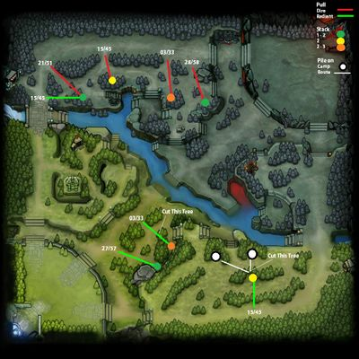
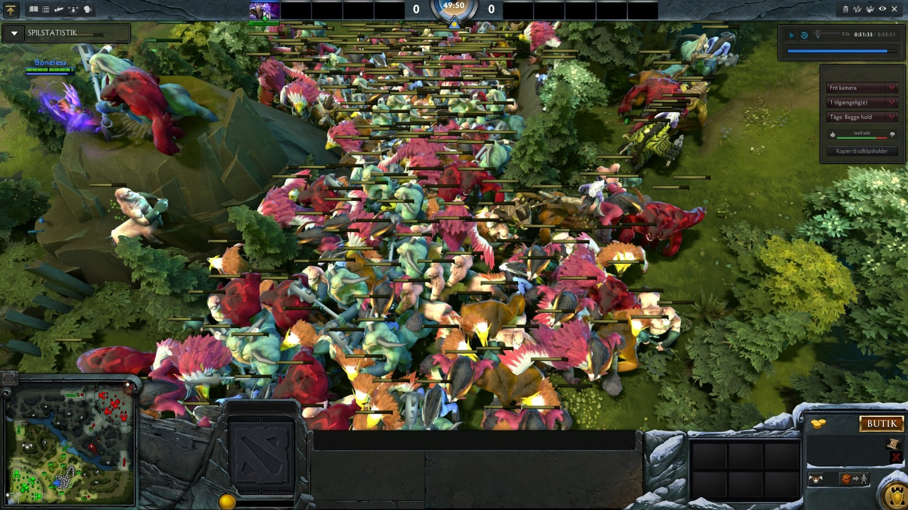
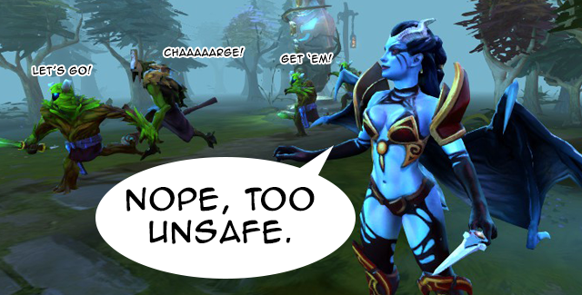

To pull, you attack a group of neutral creeps and then run away so they follow you (this is called pulling aggro). While they are following you, they run into YOUR lane creeps, who have no brain, will see the enemy, and follow them back into the jungle to attack them.
Farming by Pulling the Creeps
This is by far the easiest way to pull safely, but it isn't the fastest way for your hero to gain levels. The reason is because two camps attacking your creeps at the same time is too much damage. If you use this method for pulling you'll deny your enemy's exp, but you won't get very much exp yourself because few neutrals will be dying each wave.
Stacking and Pulling the Creeps
When you do a gank and push, you generally grab an item called a smoke of deceit which makes your team invisible to enemy wards and creeps (but nearby enemy heroes and towers will reveal you). You push your lanes away from your base, smoke your team, jump on whatever hero you see on the map, and all of the sudden you have their death timer in time to force a team fight where it's 5v4.
Ganking and Pushing Strategy
